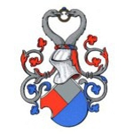

Antavla
7984408 Gjord Jensen Drefeld
Blev ca 24 år.

Far:
Jens Gjordsen Drefeld till Gärsnäs (>1350 - )
Mor:
Kjöle Jacobsdatter Bing (>1404 - )
Född:
omkring 1380 Gärsnäs (M).
[1]
Död:
1404 Skåne, Sverige.
[1]
Barn med
7984409 Margarete Jensdatter Egeside (>1400 - )
Barn:
Vesti Gjordsen Drefeld (1410? - )
Personhistoria
Årtal
Ålder
Händelse
1380?
Födelse omkring 1380 Gärsnäs (M)
[1]
>1400
Partnern
7984409 Margarete Jensdatter Egeside
föds efter 1400 Skåne, Sverige
[2]
1404
Död 1404 Skåne, Sverige
[1]
>1404
Modern
15968817 Kjöle Jacobsdatter Bing
föds efter 1404
[2]
Källor
[1]
Flemming Stephansen
[2]
Martin Severin Eriksen